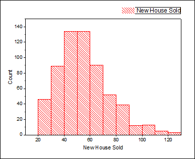

Verteilungsanpassung
dist-fit
Zusammenfassung
Das Verteilungsmodell zu kennen, hilft Ihnen dabei, mit der richtigen Analyse fortzufahren. Es ist auch hilfreich, eine Schätzung für Ihre Daten durchzuführen. Das Hilfsmittel Verteilungsanpassung unterstützt Anwender bei der Untersuchung der Verteilung ihrer Daten und der Schätzung der Parameter für die Verteilung.
Was Sie lernen werden
Dieses Tutorial zeigt Ihnen:
- eine Verteilungsanpassung für praktische Daten mit Origin ausführen,
- Die erzeugten Ergebnisse interpretieren
Anwenderbericht
Ein Bauunternehmer möchte entscheiden, wie viele neue Häuser er im nächsten Jahr bauen soll. Diese Entscheidung basiert auf den Daten der Häuser, die in der Umgebung verkauft wurden. Er möchte Folgendes wissen:
- Wenn er 80 neue Häuser baut, wie groß ist die Wahrscheinlichkeit, dass sie alle verkauft werden?
- Er glaubt, dass er einen Profit machen kann, wenn eine Wahrscheinlichkeit von mindestens 60% besteht, dass er alle seine Häuser verkaufen wird. Wie viele Häuser sollte er bauen?
Um dieses Problem zu lösen, muss der Bauunternehmer:
- eine Verteilungsanpassung für die Beispieldaten (verkaufte Häuser in der Umgebung) durchführen,
- die beste Anpassungslösung auswählen,
- mit Hilfe der kumulativen Verteilungsfunktion der ausgewählten Verteilung die Wahrscheinlichkeit berechnen.
- Wenn die Wahrscheinlichkeit mehr als 60% beträgt, ist der Plan zu überdenken.
Verteilungen wählen
- Öffnen Sie ein neues Projekt oder eine neue Arbeitsmappe. Importieren Sie die Datendatei \Samples\Statistics\HouseSold.dat
- Markieren Sie Spalte B und wählen Sie Zeichnen: Statistik: Histogramm im Origin-Menü.
- 
- Bedenken Sie die untenstehenden Fakten, wenn Sie sich für eine Verteilung entscheiden:
- Die Daten basieren auf ganzzahligen Werten, so dass Sie die Anpassung von sowohl kontinuierlichen als auch diskreten Verteilungen in Betracht ziehen können. (Bei gleitenden Punktzahlen stehen nur kontinuierliche Verteilungen zur Auswahl.) Da kontinuierliche Verteilungen jedoch normalerweise die besseren Anpassungen als diskrete Verteilungen bieten, möchten wir aus den kontinuierlichen Verteilungen wählen.
- Der Wert des Verlaufs neuer Häuser ist ein positiver Wert. Sie müssen daher keine Normalverteilung betrachten, die negative Werte annehmen kann.
- Sehen Sie sich das Histogramm an. Die Daten bilden einen Cluster um einen Wert. Damit müssen Sie auch die Exponentialverteilung nicht berücksichtigen, da sie für extrem asymmetrische Daten geeignet ist.
Verteilungsanpassung durchführen
- Wechseln Sie zurück zu dem Arbeitsblatt HouseSold und markieren Sie die Spalte B. Wählen Sie im Menü Statistik: Deskriptive Statistik: Verteilungsanpassung.
- Erweitern Sie in dem aufgerufenen Dialog den Zweig Verteilungen, deaktivieren Sie das Kontrollkästchen Normal und wählen Sie die folgenden drei Verteilungen basierend auf den Schlussfolgerungen aus dem Abschnitt Verteilungen wählen aus:
- Erweitern Sie den Zweig Diagramme und wählen Sie Wahrscheinlichkeitsdiagramm.
- Aktivieren Sie im Zweig Güte der Anpassung alle drei Methoden. Klicken Sie auf OK, um die Einstellungen anzuwenden und den Dialog zu schließen.
Anpassungsmodelle vergleichen und auswählen
Sie können ein Anpassungsmodell basierend auf folgenden Ergebnissen der Verteilungsanpassung vergleichen und auswählen:
- Wahrscheinlichkeitsdiagramm (P-P-Diagramm)
- Je näher die Punkte bei der Referenzlinie liegen, desto besser eignet sich die Verteilung für den Datensatz. In Bezug auf das Wahrscheinlichkeitsdiagramm sind die Verteilungen lognormal und gamma beide gute Modelle für die Daten.
-
- Tabelle Tests der Anpassungsgüte
- Sehen Sie sich die p-Werte in der Tabelle an. Wenn der p-Wert kleiner ist als 0,05, wird die Verteilung auf einem Niveau von 0,05 zurückgewiesen. Der p-Wert von lognormal und gamma ist größer als 0,05. Die Test der Anpassungsgüte zeigen, dass sowohl lognormal als auch gamma gute Modell für die Daten sind.
-
Aus den Tabellen Wahrscheinlichkeitsdiagramm und Tests der Anpassungsgüte kann die Schlussfolgerung gezogen werden, dass lognormal und gamma beide eine gute Wahl sind. Hier wird lognormal als Beispiel für die weitere Analyse gewählt.
Schätzungen durchführen
Sobald das beste Verteilungsmodell gefunden wurde, können Sie die Funktionen CDF und INV verwenden, um diese Wahrscheinlichkeiten zu berechnen:
- Wenn er 80 neue Häuser baut, wie groß ist die Wahrscheinlichkeit, dass sie alle verkauft werden?
- Wie viele Häuser sollten gebaut werden, wenn er hofft, eine Wahrscheinlichkeit von 60% zu haben, sie alle zu verkaufen?
- Um die erste Frage zu beantworten, öffnen Sie das Befehlsfenster oder das Skriptfenster im Menü Fenster und geben Sie Befehle wie unten zu sehen ein:
-
logncdf(80, 3,94262, 0,35614) =
- wobei 3,94262 Mu ist und 0,35614 Sigma. Sie erhalten diese Werte aus der Tabelle Parameterschätzungen im Berichtsblatt.
-
- Sie erhalten
logncdf(80, 3,94262, 0,35614) = 0,89136185728793
- Sie können schlussfolgern, dass die Wahrscheinlichkeit, die Häuser NICHT alle zu verkaufen, bei 89% liegt, wenn der Bauunternehmer 80 neue Häuser baut.
- Um die zweite Frage zu beantworten, führen Sie das Skript unten im Befehlsfenster oder Skriptfenster aus:
-
logninv(1-0.6, 3.94262, 0.35614) =
- Sie erhalten
logninv(1-0,6, 3,94262, 0,35614) = 47,105650533425
- Sie können schlussfolgern, dass der Bauunternehmer wahrscheinlich einen Gewinn macht, wenn er 47 neue Häuser baut.
 | Da im Abschnitt Verteilung wählen das Modell lognormal gewählt wird, verwenden Sie logncdf und logninv für die Schätzung. Wenn Sie gamma wählen, können Sie gamcdf und gaminv für die Schätzung verwenden. Sie werden zu ähnlichen Schlüssen kommen. |
Hinweise:Es gibt auch andere Deskriptive Statistiken und Diagramme, die sich aus der Verteilungsanpassung ergeben, die Ihnen dabei helfen, einen schnellen Überblick über Ihre Daten zu erhalten.- Tabelle Deskriptive Statistik
- Tabelle Quantile
- Histogramm
- Boxdiagramm
- CDF (Cumulative Distribution Function Plot, Diagramm der kumulativen Verteilungsfunktion)
|